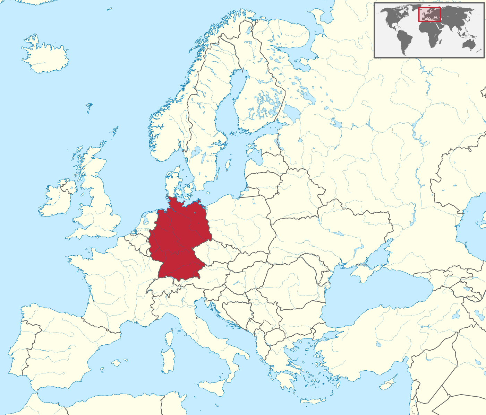
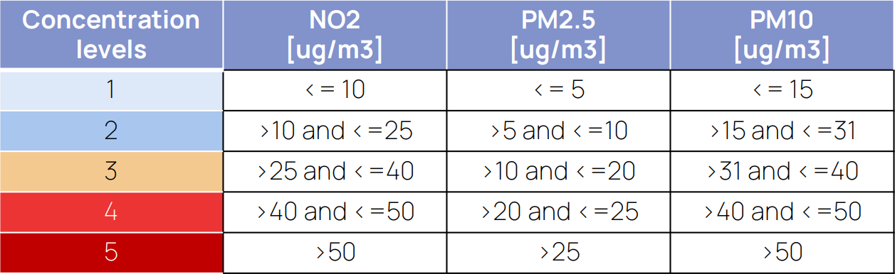
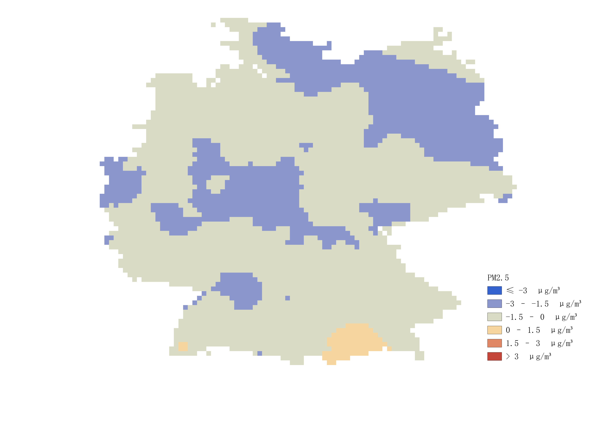
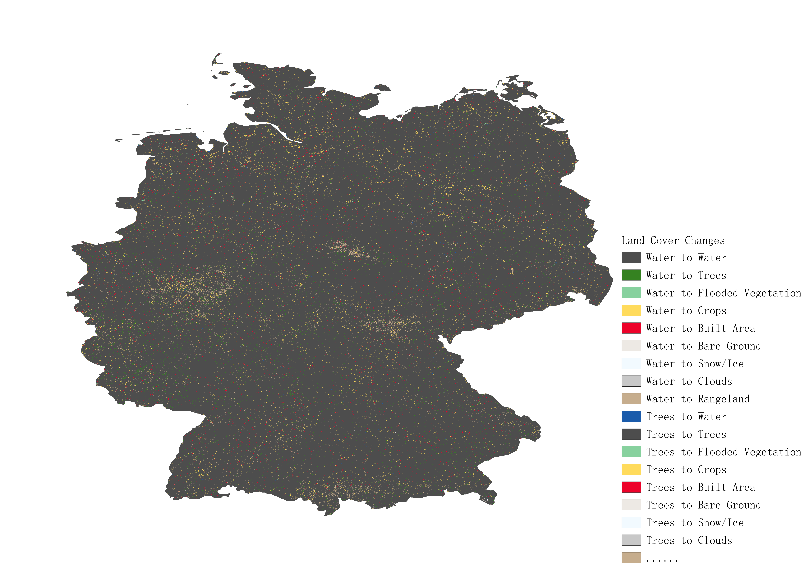
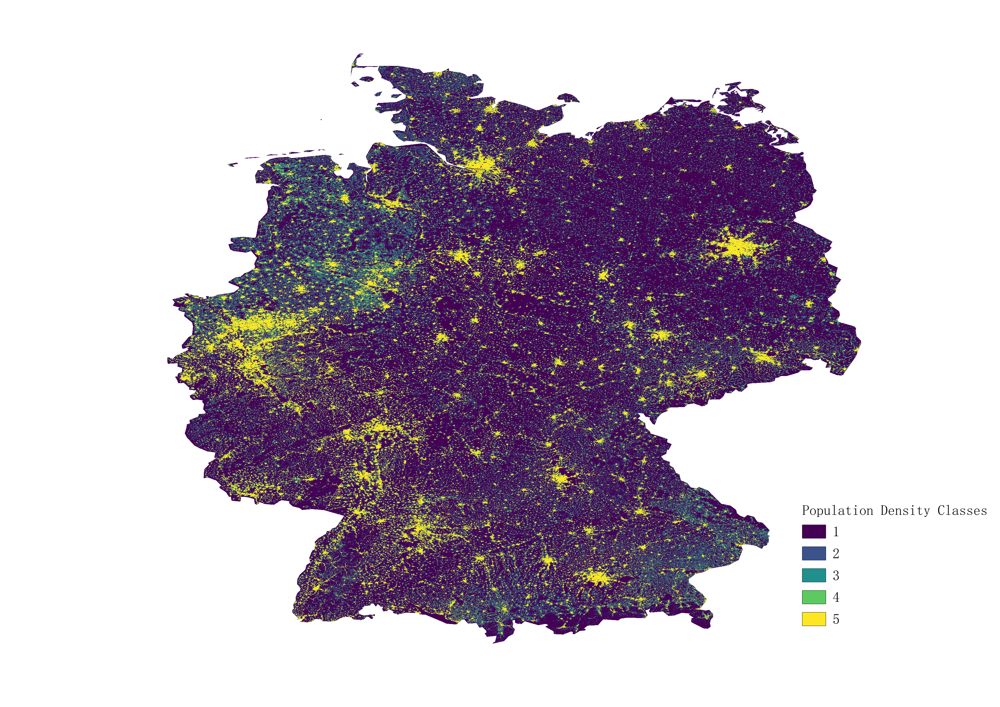
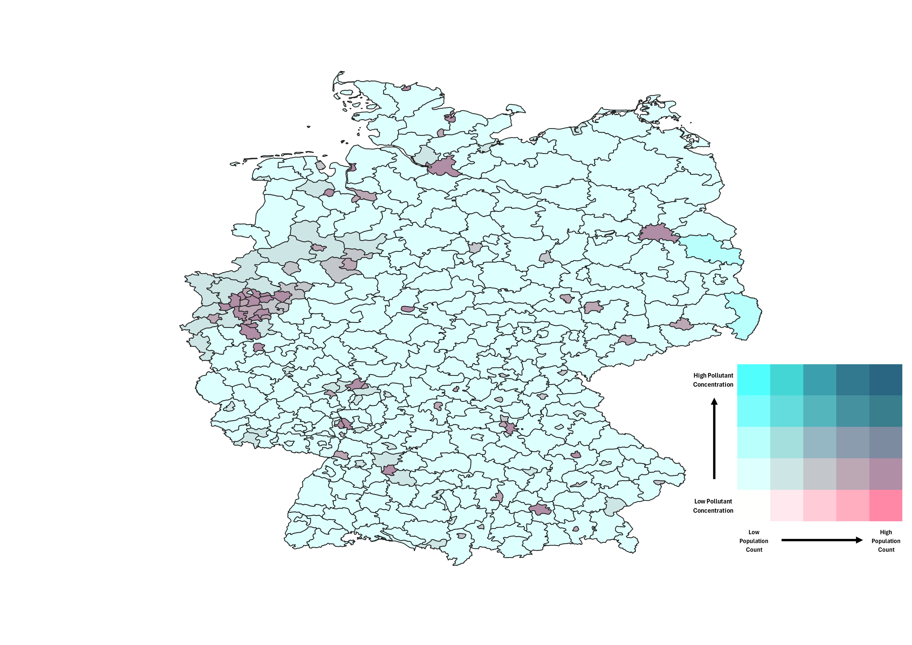

Step 1: Case Study & Data Preparation

Germany was selected as the case study area. First, we obtained the national boundary from the vector layer containing boundary geometries and group attributes by selecting our group number in the Group attribute field.
Environmental and Population data used include:
-
Environmental data
- CAMS air quality reanalysis data (monthly aggregated raster data for year 2021 & 2023)
- ESRI 10 m Annual Land Cover (2021 & 2023)
-
Population Map
- WorldPop population raster (2023)
All data were reprojected to WGS84 and clipped to the study area using Clip Raster by Mask.
Step 2: Pollutant Raster Processing
For each pollutant (NO₂, PM2.5, and PM10), we calculated:
- December 2023 monthly mean raster derived from CAMS NetCDF data
- 2021 annual average raster
- 2023 annual average raster
- AMAC map calculated as the 2023 annual average minus the 2021 annual average
Because the CAMS monthly dataset did not include the December 2023 raster, we generated it from the raw December 2023 NetCDF file. The file was loaded in QGIS as a mesh layer, aggregated into a monthly mean raster, and exported as a GeoTIFF layer. The annual averages were then calculated from the clipped monthly rasters using the GRASS r.series tool.
Using the five EU concentration classes, we reclassified the 2023 annual average raster for each pollutant.

Annual Mean Aggregation Change (AMAC) maps were calculated by subtracting the 2021 annual average from the 2023 annual average. Taking PM2.5 base map as an example, the AMAC map shows the spatial distribution of changes in annual mean PM2.5 concentrations between 2021 and 2023.

Step 3: Land Cover Change Analysis
We used ("LC_2021" × 100) + "LC_2023" to create a land cover transition raster. This encoding records both the original class and the 2023 class for each valid pixel, making the spatial pattern of land cover change across Germany directly visible.

The assigned pollutant-land cover pairs were NO₂ with Built Area, PM2.5 with Crops, and PM10 with Trees. For each assigned class, pixels were grouped as Stable, Gain, or Loss. The transition masks were then used to summarize AMAC values, showing how pollutant change differs across stable areas and areas of land cover gain or loss.

Step 4: Population Exposure & Bivariate Mapping
WorldPop 2023 Population Counts were prepared for the Germany boundary and reclassified into five quantile-based classes using r.quantiles and Reclassify by rules.

FAO GAUL Level 2 administrative boundaries were used as the reporting units. For each district, zonal statistics provided the median population class and the maximum pollutant concentration class. These values were combined with bivariate = pol_class_max × 10 + pop_class_median, creating a 5×5 pollutant-population exposure matrix.

Step 5: Output Integration & WebGIS Publication
The processed outputs were organized through the Results and WebGIS pages. The Results page summarizes annual pollutant averages, concentration classes, AMAC maps ...
The WebGIS page provides an interactive view of the main spatial outputs. It is designed to support map exploration with pollutant layers, land cover change layers, bivariate exposure layers, legends, and map controls, allowing the workflow results to be inspected directly in the browser.